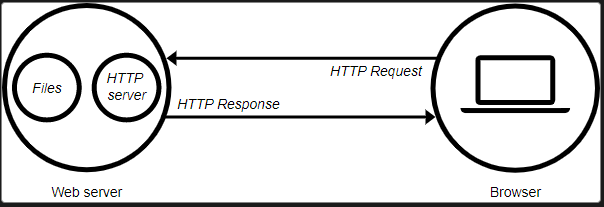
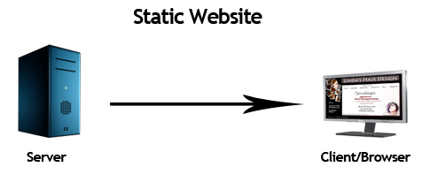
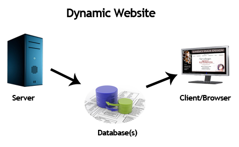

What is Web Server?
The main job of a web server is to display website content through storing, processing and
delivering webpages to users. Besides HTTP, web servers also support SMTP (Simple Mail Transfer
Protocol) and FTP (File Transfer Protocol), used for email, file transfer and storage.
Summary:
The term web server can refer to hardware or software, or both of them working together.
- On the hardware side, a web server is a computer that stores web server software and a website's
component files (for example, HTML documents, images, CSS stylesheets, and JavaScript files). A
web server connects to the Internet and supports physical data interchange with other devices
connected to the web.
- On the software side, a web server includes several parts that control how web users access
hosted files. At a minimum, this is an HTTP server. An HTTP server is software that understands
URLs (web addresses) and HTTP (the protocol your browser uses to view webpages). An HTTP server
can be accessed through the domain names of the websites it stores, and it delivers the content
of these hosted websites to the end user's device.

Here are some common tasks handled by web servers:
Serves HTML, CSS, and JavaScript files.
Serves images and videos.
Handles HTTP error messaging.
Handles user requests, often concurrently.
Directs URL matching and rewriting.
Processes and serves dynamic content.
Compresses content for optimized data usage and speed.
Enables browser caching for your static content.
Serving Static Content:
Besides web pages, web servers get requests for other resources such as images, videos, CSS files,
and
JavaScript files. Since these items are always the same regardless of who requests them, this type
of
content is referred to as static. Oftentimes a web page itself is just an HTML file that isn’t
customized to the person requesting it, and is also treated as static content. Web servers can also
compress this static content for better load times.
Nginx excels as serving static content due to its event-driven request handling. Apache can also
serve
static content, but in most setups, not at the same speed and efficiency under load compared to
Nginx.

Serving Dynamic Content:
When content is changed, processed, and customized depending on who is requesting it, the content is
referred to as dynamic. For example, after you log in to a website, often the website will
dynamically
populate your username in the top navigation bar. Dynamic content adds extra complexity because it
forces the web server to handle many requests uniquely at the time it receives it. Content tailored
per
request cannot be served to everyone, and cannot be universally cached.
Processing dynamic content internally removes an extra layer of abstraction that would normally
require
handing off the request to an external library. Apache natively implements dynamic content
processing,
with popular solution stacks such as LAMP (Linux, Apache, MySQL, PHP). Nginx is more language
agnostic
but requires external libraries such as PHP-FPM to act as a similar solution for use cases such as
LAMP
stack.

Articles Link
Web Server
HTML Elements
Input Elements
Audio And Videlo Tag
Flex Box
Positioning
CSS Box Model
Media Query
CSS Grid